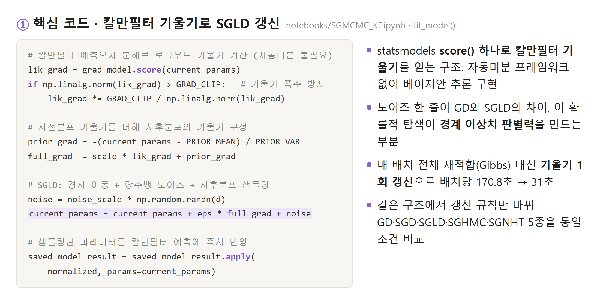
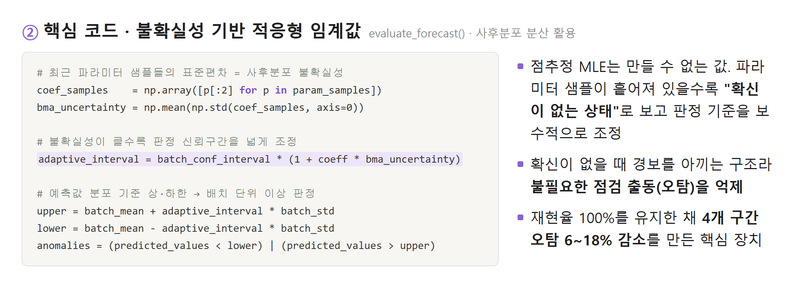
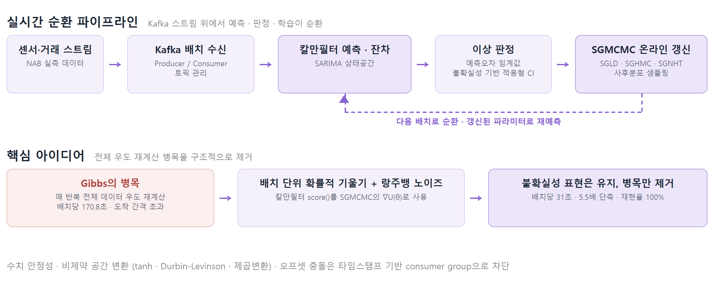
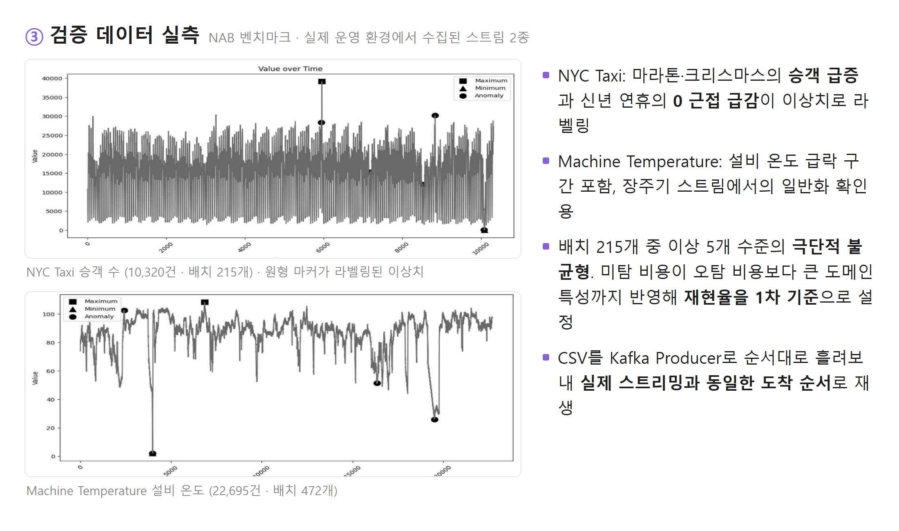

이상 신호를 하나도 놓치지 않으면서(재현율 100%) 처리 속도를 5.5배 높인 실시간 베이지안 이상탐지.
Kafka 스트리밍 위에서 칼만필터와 SGMCMC를 결합 · JKDAS 28(2) 제1저자 게재 · 단독 연구
01문제 정의
미탐의 비용
IoT·금융처럼 데이터가 계속 흘러드는 환경에서 이상 징후를 놓치면 설비 정지와 서비스 장애로 직결
점추정의 한계
널리 쓰이는 MLE 기반 SARIMA는 점추정이라 정상·이상 경계의 미세한 전조를 놓침
속도-정확도 트레이드오프
전통 베이지안(Gibbs)은 매 반복 전체 데이터를 재계산. 배치당 170.8초로 배치 도착 간격을 초과해 실시간 불가. 정확하면 느리고 빠르면 놓치는 구조가 출발점
02알고리즘 설계
| 검토안 | 내용 | 판단 |
|---|---|---|
| 1안. MLE 기반 SARIMA 유지 | 가장 빠르고 구현 단순 | 기각. 점추정이라 파라미터 불확실성 미반영, 경계 전조 미탐 |
| 2안. Gibbs 샘플링 (전통 MCMC) | 사후분포를 정확히 추정 | 기각. 배치당 170.8초로 도착 간격 초과. 정확해도 늦으면 틀린 답 |
| 3안. 칼만필터 + SGMCMC 결합 (채택) | 배치 단위 확률적 기울기 + 랑주뱅 노이즈로 갱신 | 채택. 전체 우도 재계산 병목을 구조적으로 제거하면서 불확실성 표현 유지 |
- SARIMA 상태공간 표현 + 칼만필터 예측오차 분해로 우도·기울기 계산 설계, 코드 작성 전 수식 유도 검증 단계를 일정에 별도 배치
- 비교 실험은 학습률·배치 크기·임계값·파이프라인·데이터 순서를 7종에 동일 적용하고 갱신 규칙만 변인으로 통제


03파이프라인

04평가 설계
- 검증 데이터는 NAB 실측 스트림 2종: NYC Taxi(10,320건 · 배치 215개 · 이상 5개), Machine Temperature(22,695건 · 배치 472개 · 이상 4개)
- 미탐 비용이 오탐 비용보다 큰 도메인 특성을 반영해 재현율을 1차 기준으로 걸고, 재현율이 같은 방법 사이에서만 오탐 비교

05결과
| 지표 | Before | After (SGLD-KF) |
|---|---|---|
| 배치당 처리 시간 | 170.8초 (Gibbs) | 31초 · 5.5배 단축 |
| 미탐 (재현율) | Gibbs 33% (이상 3건 중 2건 놓침) | 100% · 미탐 0건 |
| 오탐 | 기준선 대비 | 학습·테스트 4개 구간 전부 6~18% 감소 |
| F1 (NYC Taxi 테스트) | 15.00% (MLE) | 17.14% · 비교 7종 중 최고 |
7종 방법 비교 (NYC Taxi 테스트)
| 방법 | 정확도(%) | 재현율(%) | F1(%) | 배치당 시간(초) |
|---|---|---|---|---|
| MLE | 19.05 | 100 | 15.00 | 9.8 |
| Gibbs (전통 MCMC) | 64.29 | 33.33 | 11.76 | 83.3 |
| GD | 21.43 | 100 | 15.38 | 11.1 |
| SGD | 19.05 | 100 | 15.00 | 10.9 |
| SGLD (제안) | 30.95 | 100 | 17.14 | 10.6 |
| SGHMC | 78.57 | 33.33 | 18.18 | 10.7 |
| SGNHT | 64.29 | 100 | 15.38 | 10.6 |
- SGHMC는 F1·정확도가 높지만 실제 이상 3건 중 2건을 놓침(재현율 33%). 불균형 데이터에서 F1·정확도 상위 모델 선택이 오히려 위험함을 규명
- 노이즈 강도 순(GD → SGD → SGLD)으로 정밀도 단조 증가. 랑주뱅 노이즈의 확률적 탐색이 경계 이상치 판별에 기여함을 정량 확인
- Machine Temperature 테스트에서도 SGLD가 7종 중 최고 F1에 재현율 100% 유지 (Gibbs는 이상 1건마저 놓쳐 재현율 0%)
- 놓치면 설비 정지로 이어지는 이상 신호를 전부 잡으면서 불필요한 점검 출동(오탐)만 줄인 구조. 연구 결과를 JKDAS 28(2) 제1저자로 게재